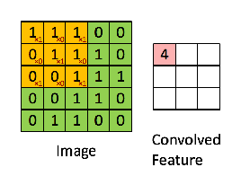

CNN Basics
Convolutional layer
The Convolutional layer is the key component of CNN and always the first layer of the CNN.

- its purpose is to detect the presence of set of features in the images received as an input. and this is done by convolutional filtering.
Pooling Layer
This type of layer often placed between two layers of convolution. it receives several feature maps and applies the pooling operation to each of them.

-
pooling operation will reduce the size of image while preserving their important features.
-
pooling layer reduces number of parameters in the network. it improves the efficiency of the network and avoids over learning.
strides
Stride is the number of pixels shifts over the input matrix. When the stride is 1 then we move the filters to 1 pixel at a time. When the stride is 2 then we move the filters to 2 pixels at a time and so on. The below figure shows convolution would work with a stride of 2.

Padding
Sometimes filter does not fit perfectly fit the input image. We have two options:
- Pad the picture with zeros (zero-padding) so that it fits
- Drop the part of the image where the filter did not fit. This is called valid padding which keeps only valid part of the image.